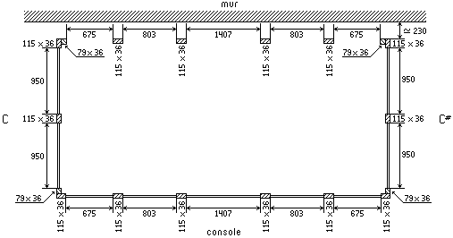
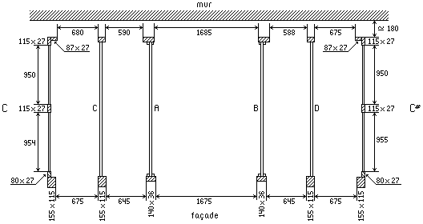
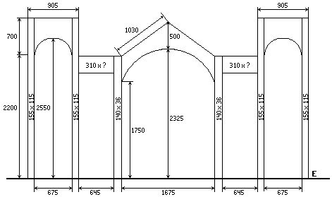
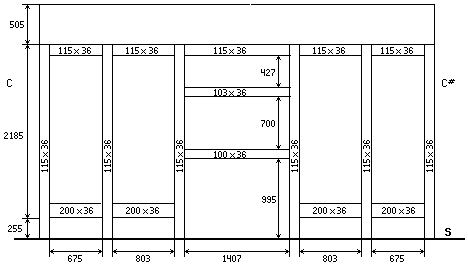
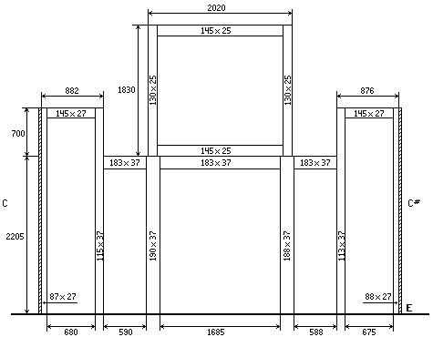
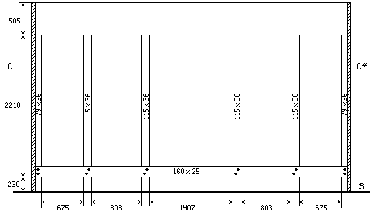
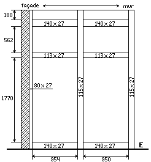

Grand Temple de l'Église Réformée
Le buffet.
La charpente. |
|
La charpente. |
|
La charpente est en sapin comme les panneaux du buffet. Elle est d'ailleurs solidaire de celui-ci, ce qui nous amène une fois encore à souligner l'importance de l'influence classique sur la facture de cet instrument. En effet, vingt ans plus tard, à la fin du XIXe siècle, il était plus courant de trouver un buffet « habillant » un instrument que faisant, comme c'est le cas dans cet orgue, intrinsèquement corps avec le reste de l'ouvrage. Toutefois, les montants et les traverses sont de sections si petites qu'elles font plus penser à un buffet « décor ».
Une des choses les plus frappantes dans la charpente de l'orgue de Saint-Hippolyte reste incontestablement l'entablement. Celui-ci est composé d'une ceinture de sapin faisant tout le tour de l'orgue (fond compris), assemblée dans les coins à queue d'aronde et à rainures et languettes sur les montants et traverses du soubassement sur lequel elle se trouve comme posée. Ce véritable monstre de bois comporte quatre planches, (deux mesurent la largeur de l'instrument, les deux autres, sa profondeur) elles-mêmes composées de plusieurs autres encollées entre-elles. Si le travail est exécuté avec beaucoup de soin, si l'on peut ici plus qu'ailleurs constater l'audace de Beaucourt et Voegeli d'avoir osé installer un entablement de 505 millimètres de hauteur sur 36 d'épaisseur, force est de constater que toutes les conditions sont réunies pour que les sommiers, s'élèvent de quelques millimètres en hivers et redescendent en été. On constate là les faiblesses d'une facture, tendant toujours à être formalisée le plus possible, et s'il est indéniable que le calcul théorique autorise de telles sections, il en va différemment en pratique, aspect des choses qui ne toucha pas les facteurs concepteurs.
Après avoir reconstitué la mécanique, j'ai [Laurent PLET] pris la décision de rendre deux barres d'équerres flottantes afin de compenser ce défaut. En effet, cet instrument n'étant pas classé Monument Historique, sa reconstitution était de ma seule responsabilité, avec cependant une obligation de fiabilité de mon travail...1
Le mur du fond ainsi que le sol de la tribune n'étaient pas droits dès l'origine de la construction de l'orgue. Beaucourt et Voegeli n'ont pas trouvé utile d'installer une semelle à l'instrument et ont donc comblé les niveaux à l'aide de cales placées sous les montants. De même, l'orgue ne possédant pas de fond, des planches sont clouées sur les montants arrière (travail exécuté correctement) afin de rattraper les inégalités du mur.
Je n'ai pas dessiné l'agencement des traverses et des montants qui forment les panneaux de côté du Récit pour la raison suivante : faute d'avoir une échelle assez haute et parce que seul à prendre les relevés, toutes les mesures de la charpente ont été prises à l'intérieur de l'instrument. Certaines d'entr'elles m'ont demandé un déploiement de souplesse assez exceptionnel pour les obtenir... Je n'ai donc dessiné que les parties de l'orgue dont je suis à peu près sûr des mesures et non celles dont je doute de l'exactitude. De plus, j'ai été obligé de faire - rarement - des déductions ou des opérations pour obtenir une dimension. La justesse du relevé en fut donc chaque fois un peu altérée. Il en résultera certainement quelques erreurs - notamment dans les hauteurs - négligeables quand on sait que le buffet n'a pas nécessité d'être démonté pour la restauration de l'orgue...

Disposition des montants du soubassement au niveau du sol.

Disposition des montants du soubassement au niveau des sommiers.Les traverses A et B servent à soutenir les plafonds des plates-faces ainsi que la boite destinée à recevoir le Récit ; leurs section est de 125 × 52 mm. Les traverses C et D servent à soutenir les panneaux intérieurs des tourelles. Je n'ai pas dessiné ces panneaux (qui sont cloués sur les montants des tourelles), mais il m'a été possible de déterminer leurs dimensions à 2185 × 700 mm.
Agencement des montants et des traverses
Avant du buffet

Niveau des sommiers.La ligne marquée E représente le niveau de l'entablement.

Soubassement de l'orgueLa ligne marquée S représente le sol. On peut voir la ceinture de l'entablement ainsi que la traverse de soutien des tournants de tirage de jeux (située à 995 mm. du sol). Celle ci, vissée et non assemblée dans les montants, avait été sectionnée par Maurice Puget ; la restauration de 1992 l'a évidemment reconstituée. Afin d'éviter toute confusion, les sections des montants sont indiquées sur eux mêmes.
Fond du buffet

Niveau des sommiers.La ligne marquée E représente le niveau de l'entablement. Sur cette figure, on voit nettement le fond de la charpente du Récit prévu par Beaucourt.

Soubassement de l'orgueLa ligne marquée S représente le sol. La grande traverse qui parcourt toute la largeur de l'orgue est vissée sur les montants et assemblée à mi bois.
Côtés de l'orgue (C) |
|
|  | Niveau des sommiers |

|
Niveau du soubassement |
Note :
(1) Laurent PLET, Rapport sur la restauration de l'orgue BEAUCOURT et VOEGELI du Temple Réformée de Saint-Hippolyte du Fort (Gard).